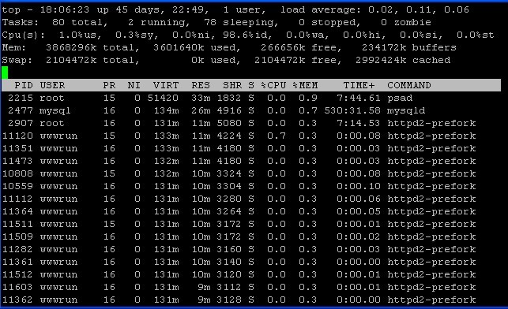
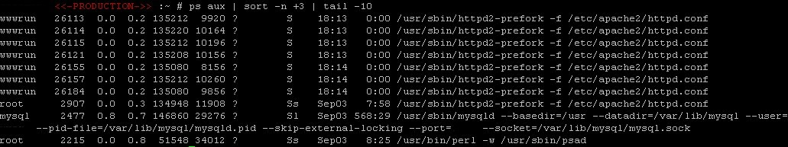
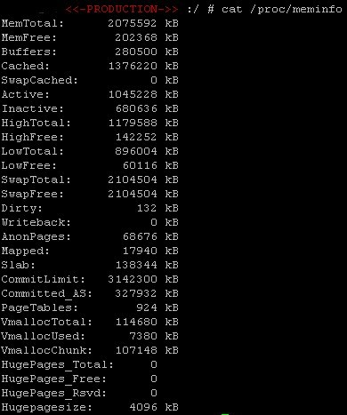
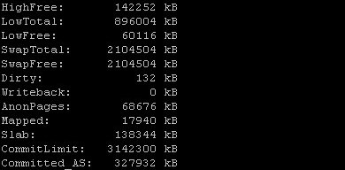

SLES 11 high memory usage diagnosing and troubleshooting on Vmware suddenly became an issue for us when VMware alarms started triggering for our new WordPress blog journalism server running on Sles 11 under Vmware 3.5 U3.
The server surprisingly only had a dozen users, surprising since a commercial WordPress provider i talked to had up to 50,000 hits per day and dozens of users on a box with 2 gigs of memory and no problems. Chances are its a memory leak, probably from a WordPress plug-in that’s causing all the problems, however being a linux server there’s other ways to manage the memory. The following is written for my staff to help bring them upto speed on memory and its troubleshooting.
MEMORY TROUBLESHOOTING
Start by checking your server has enough memory, if processes are dying unexpectedly have a look at your /var/log/messages file and see if you are running out of memory or if processes are being killed of due to lack of memory.
I normally use the free command first to see how memory is being used, i like to use the –m flag to have the output formatted in megs to simply reading the information, e.g.:
[Server] <<-PRODUCTION->> :~ # free -m
total used free shared buffers cached
Mem: 3777 3516 260 0 228 2921
-/+ buffers/cache: 366 3410
Swap: 2055 0 2055
I could go over the output in depth however there’s a really easy way to understand what’s happening, just look at the line:
Used Free
-/+ buffers/cache: 366 3410
The first value is how much memory is being used and the second value is how much memory can be freed for use by applications. As long as you have memory that can be used by applications you’re generally fine. Another aspect to note is the output is the swap file:
Total Used Free
Swap: 2055 0 2055
Swapping generally only occurs when memory usage is impacting performance, unless you manually change its aggressiveness, more on that later.
Swap
If your server is heavily using swap things are bad, you’re running out of memory. The exception to this is where you have a distro with cache problems and may well decide to max swapiness to reduce the problems cache created. To find the space dedicated to swap type:
more /proc/swaps
To find your current level of swapiness type:
cat /proc/sys/vm/swappiness
The default value is 60. However different systems require different levels of swapiness, a server is not the same as home computer. The value ranges between 0 and 100. At 100 the server will try and swap inactive pages, at 0 applications that want ram will shrink the ram to a tiny fraction of cache, i.e. 0 less likely to swap, 100 very likely. You can change the value by echoing a new one to the /proc/sys/vm/swapiness file, e.g.
echo 10 > /proc/sys/vm/swapiness
To change the default level on boot edit the /etc/sysctl.conf file (since kernel 2.6) e.g.
vm.swappiness = 10
MEMORY PROCESS ALLOCATION
Along with other aspects of the server, Virtual memory statistics can be reported with vmstats, its main use for memory diagnosis is that it reports page-ins and page-outs as they happen. The best way to see this is by delaying the output of vmwstat and it comes with options to do this, otherwise it just reports averages since the last boot. State the delay in seconds after the command followed by the number of updates you wish to use, e.g. vmstat 2 4 runs vmstat with a 2 second delay with 4 updates and so on e.g.
read the man for detailed info if need be, otherwise just look at:
free – free memory
si – page ins
so – page outs
Page ins are expected e.g. when starting an application and its information is paged in
Regular page outs are not wanted, occasional page outs are expected as the kernel frees up memory. If page outs occure so often the server is spending more time managing paging than running apps performance suffers, this is refered to as thrashing. At this point you could use top and ps to identify the processes that are causing problems.
To see where all your memory is going the easiest way is to use the top command, then press m to sort by memory, press q or crtl+c to exit the top screen.

For more detailed information you can always use ps aux and see which process are using memory and how much. Apache and mysql are normally top users, along with psad for busy web servers.
To sort the output of ps by memory you are supposed to be able to use:
ps aux –sort pmem
however i find this does not work on all flavours on linux so i prefer to use the sort command to sort by memory usage order :
ps aux | sort –n +3
Then if i just want to look at the top 10 memory hogs or the top memory hog i do a further pipe and use the tail command, e.g. to find the 10 highest memory consuming process:
ps aux | sort –n +3 | tail -10

If you want to monitor a processes memory usage then look at the pid for the process and setup a cron job to pipe the output of the command ps ev –pid=<PID> to a file you can check later. If you want to check memory usage change straight away keep entering the command:
ps ev –pid=<PID>
Once you know the process that is responsible for the memory problems you can optimise it, or kill it. Here’s a few common tricks for processes that can use a lot of memory
Java
Java memory heaps need a limit to their sizes set by passing a –Xmx option else the heap increases until you’re out of memory. Custom Java apps should be able to use the java command line –XmxNNm. NN = number of megs. With JBoss and Tomcat check the settings in your relevant JBoss (48m to 160m recommended) or Tomcat files (48m to 96m recommended).
A rough way to work out the largest size you can set is to stop the java process’s then look at the free –m output for buffers as shown earlier and subtract the used from the free to allow for unexpected memory usage, the resultant number is the max memory you could set.
However keep in mind these are just guidelines, It’s up to you to decide how high to set the memory limit for the heap since only you really know how much memory you have on the server and how memory the java process needs.
Apache
Apache when it loads starts multiple servers and distributes the traffic amongst these ‘servers’, the memory usage can grow large as each loads libraries for php and perl. You can adjust the number spawned with the settings:
StartServers
MinSpareServers
MaxSpareServers
These are in the httpd file. However depending on the distro you might need to adjust the prefork values, google for your os. The maxclients value can be worked out by finding out the memoty usage of the largest apache client, stopping apache, looking at free memory and dividing by the free memory by the memory usage size of the largest apache thread. Apache has default configuration for small, medium and large servers. For many of you out there hosting your own low traffic site you’ll get better performance used the settings optimised for small servers.
SQL
However in some cases the problem is down to the cache.
Reducing cached memory
Linux memory management tries to minimise disk access. To do this it will use any unused ram to cache, this is because reading from disk is slow compared to reading from memory. When the cache is used up the data that has been there the longest is freed, theoretically data that is used often will not be removed whilst data that is no longer needed slowly gets moved out of the cache. When an application needs memory the kernel should reduce the size of the cache and free up memory. This is why people sometimes get confused when using the free command, since linux uses memory for cache it can appear to the untrained eye that most of the memory has been used up. This is in fact normal; it’s when the server can no longer free memory from the cache that problems occur.
Freeing cache memory therefore does not usually make your computer faster, but the converse, linux becomes slower having to re read information to the cache. Ironic then that some of the latest distro’s of linux, namely SUSE and Mandriva seem to have forgotten this, there are numerous reports of these, and other linux distro’s, deciding cached memory is too important to free up for actual processes. Luckily a solution was added in kernel 2.6.16 allowing us to free cached memory by writing to /proc/sys/vm/drop_caches. There are three options depending on what you need to do, clean the cache, free dentries and inodes, and free cache, dentries and inodes, we run sync first to ensure all cached objects are freed as this is a non-destructive operation and dirty objects are not freed:
To free cache enter:
sync; echo 1 > /proc/sys/vm/drop_caches
dentries and inodes :
sync; echo 2 > /proc/sys/vm/drop_caches
pagecache, dentries and inodes:
sync; echo 3 > /proc/sys/vm/drop_caches
You can automate these in a cron job e.g. hourly if you have the misfortune to use a distro with problems.
Another issue with cache is that if you copy a large amount of data, e.g. a file tree, the copied data will end up in the cache flushing out your existing cache. There is an interesting article on improving linux performance by selectively preserving cache state at:
http://insights.oetiker.ch/linux/fadvise/
OOM – 32 bit system memory problems (64 bit safe)
If you are running 32 bit linux and have enough memory then you might be a victim of the out of memory (oom) killer. However in 64 bit linux all memory is low memory so you are safe from Oom, and out of memory errors are really down to out of memory problems!
SOLUTION:
Oom problems can be easily solved by:
running the hugemem kernel
editing /etc/sysctl.conf with the below line to make the kernel more aggressive about recovering low memory:
vm.lower_zone_protection = 250
or finally editing /etc/sysctl.conf to disable oom on boot with the line:
vm.oom-kill = 0
CAUSE:
Oom kills processes on servers even when there is a large amount of memory free. Oom problems are caused by low memory exhaustion. Systems that are victim to Oom suffer more as memory is increased since they have kernels where memory allocation is tracked using low memory, so the more memory you have the more low memory is used up and the more you have problems. When low memory starts running out Oom starts killing processes to keep memory free!
DIAGNOSIS
To check low and high memory usage, use the command lines below, though the info is from a 64 bit system since I’m sensible J
[Server] <<-PRODUCTION->> :~ # egrep ‘High|Low’ /proc/meminfo
HighTotal: 0 kB
HighFree: 0 kB
LowTotal: 3868296 kB
LowFree: 271872 kB
[Server] <<-PRODUCTION->> :~ # free -lm
total used free shared buffers cached
Mem: 3777 3512 265 0 228 2919
Low: 3777 3512 265
High: 0 0 0
-/+ buffers/cache: 364 3413
Swap: 2055 0 2055
DETAILED MEMORY INFORMATION
To obtain detailed memory information type cat /proc/meminfo e.g.:

I was going to type something up when i found a nice explanation on red hats site which i’ve quoted and amended where relevant below:
http://www.redhat.com/advice/tips/meminfo.html
The information comes in the form of both high-level and low-level statistics. First we will discuss the high-level statistics.
High-Level Statistics
MemTotal: Total usable ram (i.e. physical ram minus a few reserved bits and the kernel binary code)
MemFree: Is sum of LowFree+HighFree (overall stat)
Buffers: Memory in buffer cache. mostly useless as metric nowadays
Cached: Memory in the pagecache (diskcache) minus SwapCache
SwapCache: Memory that once was swapped out, is swapped back in but still also is in the swapfile (if memory is needed it doesn’t need to be swapped out AGAIN because it is already in the swapfile. This saves I/O)
Detailed Level Statistics
VM Statistics
VM splits the cache pages into “active” and “inactive” memory. The idea is that if you need memory and some cache needs to be sacrificed for that, you take it from inactive since that’s expected to be not used. The vm checks what is used on a regular basis and moves stuff around.
When you use memory, the CPU sets a bit in the pagetable and the VM checks that bit occasionally, and based on that, it can move pages back to active. And within active there’s an order of “longest ago not used” (roughly, it’s a little more complex in reality). The longest-ago used ones can get moved to inactive. Inactive is split into two in the above kernel (2.4.18-24.8.0). Some have it three.
Active: Memory that has been used more recently and usually not reclaimed unless absolutely necessary.
Inactive — The total amount of buffer or page cache memory, in kilobytes, that are free and available. This is memory that has not been recently used and can be reclaimed for other purposes.
Memory Statistics

HighTotal: is the total amount of memory in the high region. Highmem is all memory above (approx) 860MB of physical RAM. Kernel uses indirect tricks to access the high memory region. Data cache can go in this memory region.
LowTotal: The total amount of non-highmem memory.
LowFree: The amount of free memory of the low memory region. This is the memory the kernel can address directly. All kernel datastructures need to go into low memory.
SwapTotal: Total amount of physical swap memory.
SwapFree: Total amount of swap memory free.
Dirty — The total amount of memory, in kilobytes, waiting to be written back to the disk.
Writeback — The total amount of memory, in kilobytes, actively being written back to the disk.
Mapped — The total amount of memory, in kilobytes, which have been used to map devices, files, or libraries using the mmap command.
Slab — The total amount of memory, in kilobytes, used by the kernel to cache data structures for its own use.
ommitted_AS — The total amount of memory, in kilobytes, estimated to complete the workload. This value represents the worst case scenario value, and also includes swap memory.
PageTables — The total amount of memory, in kilobytes, dedicated to the lowest page table level.
VMallocTotal — The total amount of memory, in kilobytes, of total allocated virtual address space.
VMallocUsed — The total amount of memory, in kilobytes, of used virtual address space.
VMallocChunk — The largest contiguous block of memory, in kilobytes, of available virtual address space.
HugePages_Total — The total number of hugepages for the system. The number is derived by dividing Hugepagesize by the megabytes set aside for hugepages specified in /proc/sys/vm/hugetlb_pool. This statistic only appears on the x86, Itanium, and AMD64 architectures.
HugePages_Free — The total number of hugepages available for the system. This statistic only appears on the x86, Itanium, and AMD64 architectures.
Hugepagesize — The size for each hugepages unit in kilobytes. By default, the value is 4096 KB on uniprocessor kernels for 32 bit architectures. For SMP, hugemem kernels, and AMD64, the default is 2048 KB. For Itanium architectures, the default is 262144 KB. This statistic only appears on the x86, Itanium, and AMD64 architectures.
We are using an EMR running on SUSE linux in VM, and have been having some weird windows client issues of locking up (only that process, it had to be killed). I restart the MYSQL service nightly, but still have the same problem everyday. I then noticed that the cache memory seems to be really high, I keep getting memory alarms on that VM machine. I noticed that after a reboot, it seems ok for the day. Which then the cache is being flushed out with the reboot. I am going to put those mysql lines in the nightly service restart script. I tested the commands in our test system and it seems to be ok
Ill let ya know if that worked for me.
Comment by Rick — March 24, 2010 @ 1:38 pm |
Not sure if this is relevant to you, Vmware 3.5 has issues with suse/sles 11, if you upgrade to vsphere the issues are resolved since vmware tools compiles correctly.
Comment by raj2796 — March 24, 2010 @ 5:58 pm |
[…] Reducing cached memory usage, Linux high memory usage diagnosing […] – good description of what is seen in “free” and all the other interesting things like meminfo “slab” […]
Pingback by Why whm memory stats are different from free/top/ssh/bash/etc memory - Cogito Ergo Sum — July 24, 2012 @ 5:31 am |
[…] https://raj2796.wordpress.com/2009/11/09/reducing-cached-memory-usage-linux-high-memory-usage-diagnos… […]
Pingback by Investigate memory load issues on a Linux VPS | Crucial Paradigm Blog — August 2, 2012 @ 7:33 am |
[…] source Share this:TwitterFacebookLike this:LikeBe the first to like this. By Lost In MonnLight • Posted in ALL, Linux • Tagged instance, linux 0 […]
Pingback by Critical Server Management Tips | Lost In MoonLight — September 27, 2012 @ 4:31 pm |
Thank you for sharing your info. I truly appreciate your efforts and I am waiting for your further
post thanks once again.
Comment by http://chrishat.es/User:Gusvkrfra — April 28, 2013 @ 9:47 pm |
[…] Source by: https://raj2796.wordpress.com/2009/11/09/reducing-cached-memory-usage-linux-high-memory-usage-diagnos… […]
Pingback by Linux – Reducing cached memory usage, Linux high memory usage diagnosing and troubleshooting on Vmware and out of memory (Oom) killer problem and solution | Rodrigo Tamada´s Unix Administration and Security — May 9, 2013 @ 8:25 pm |
You actually make it seem so easy with your presentation but I find this matter to be actually something that I think I would never understand.
It seems too complicated and very broad for me.
I am looking forward for your next post, I’ll try to get the hang of it!
Comment by Markus — July 5, 2013 @ 8:33 pm |
[…] https://raj2796.wordpress.com/2009/11/09/reducing-cached-memory-usage-linux-high-memory-usage-diagnos… […]
Pingback by Debian, un backup e i misteri della cache | eclepticbox — June 12, 2014 @ 9:21 pm |
Very nice article, еxactly աhat Ι was lookingg foг.
Comment by angry bird epic hack — October 3, 2014 @ 4:40 am |
[…] Also a page showing my exact problem: https://raj2796.wordpress.com/2009/11/09/reducing-cached-memory-usage-linux-high-memory-usage-diagnos… […]
Pingback by Swap shoots to 100% after a couple of hours of usage - TecHub — April 5, 2015 @ 11:06 am |